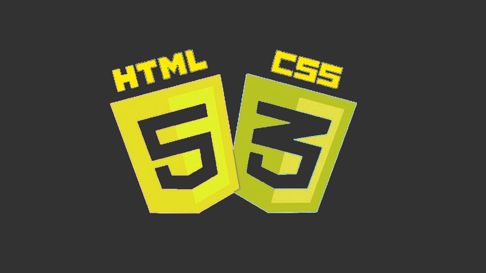

.png) Réseaux
RéseauxPHP
Html & CSS
Communication
Boucle Locale
travaux 4
Bienvenue sur mon portfolio !
Vous pourrez retrouver ici les différents projets que j'ai realisé !
RéseauxEn Réseaux, j'ai pu apprendre les différents types de configuration ainsi que le paramétrage des différents équipements. Nous avons principalement vu le matériel Cisco. Nous pouvons voir ici le lien vers un fichier .pkt qui est l'extension du logiciel Cisco Packet Tracer qui nous permet de simuler un réseau sans aucun matériel. Dans ce fichier, vous trouverez la configuration d'un réseau pour une petite entreprise (avec une connexion avec un serveur web et dns). Pour le réseau local les ip sont distribuée par un serveur DHCP. Le réseau local de l'entreprise est protègé par un fire wall qui ce nomme ASA 5505

J'ai pu améliorer mes compétences en PHP grâce à un projet qui a duré toute l'année. J'ai travaillé sur un projet de gestion de bonnes pratiques pour une entreprise nommée "Thales Alenia Space". Dans ce projet j'ai créé un site web pour les utilisateurs de l'entreprise. J'ai utilisé PHP, HTML, CSS et MySQL pour ce projet. J'ai dû créer une base de données pour stocker les bonnes pratiques, les programmes et les phases. J'ai également dû créer un système de filtrage pour les bonnes pratiques en fonction des programmes et des phases. J'ai également dû créer un système de recherche par mot-clé. J'ai également dû créer un système de suppression de bonnes pratiques. Apres tous cela j'ai dû créer un système de connexion et de déconnexion pour les utilisateurs.
J’ai pu améliorer mes connaissances en HTML et CSS grâce à un projet. J’ai créé un site en relation avec un thème de prédilection pour mon IUT en rapport avec Mercedes et leurs préparateurs car je suis un passionné automobile. J’ai apprécié ce projet car j’ai pu y apprendre à utiliser correctement visual studio code , le code HTML et CSS. J’ai déjà eu des bases en HTML et CSS car ma sœur était une développeuse front end chez triotech. J’ai eu la chance de pouvoir faire un stage chez eux.
Voici le site en question
Le 17 novembre, nous avons eu l'occasion de découvrir le métier d’administrateur réseau grâce à une interview avec Bruno Banchi, un expert de l'infrastructure informatique, actuellement en poste chez Light & Wonder. L'entretien s'est déroulé à Nice, au 36 Avenue Jean Médecin, de 14H00 à 15H00.
Il a une vaste expérience dans le domaine de l'administration réseau. Son parcours professionnel inclut des postes dans plusieurs entreprises notables : L & W (2023 - aujourd’hui), Scientific Games (2010 - 2023), Bally (2006 - 2010), MCC (2000 - 2006), et SMCI (1997 - 2000).
Au cours de sa carrière, Bruno a acquis une expertise dans plusieurs outils et langages de programmation cruciaux pour son métier, notamment Csharp (C++ / Javascript), SQL (Base de Donnée), PowerShell (Windows), VMware, et PRA (Protection). Il a également une expérience significative en consulting et en management.
Les responsabilités d’un administrateur réseau sont variées et essentielles au bon fonctionnement des systèmes informatiques. Bruno a décrit ses principales tâches, qui incluent la mise en place du réseau, la sécurité du réseau, la gestion du GDPR (Règlement Général sur la Protection des Données) ainsi que les déplacements et missions sur le terrain.
Il a également partagé les défis qu’il rencontre dans son travail quotidien, notamment la recherche et l’analyse des solutions techniques et la gestion des créneaux horaires pour les différentes tâches.
Cette interview a offert une perspective précieuse sur le métier d’administrateur réseau, illustrée par le parcours diversifié et les compétences approfondies de Bruno Banchi.
Le domaine de la boucle locale chez Orange concerne principalement les réseaux de télécommunications reliant les abonnés finaux aux infrastructures du réseau. Ce travail exige une combinaison de compétences techniques, relationnelles et organisationnelles pour garantir la qualité et la continuité des services proposés par l'opérateur.
Les techniciens de la boucle locale travaillent principalement sur le terrain, avec des déplacements fréquents pour intervenir directement chez les clients ou sur les équipements de réseau. Ils doivent également être disponibles pour des astreintes en cas de pannes urgentes.
Ces compétences, alliées à un sens du détail et une volonté d’offrir un service de qualité, sont essentielles pour assurer la continuité et la fiabilité des services de télécommunications dans la boucle locale d’Orange.
Pour vous expliquer, ici c'est une intervention sur un câble 900 paires qui se situe à Saint-Laurent-du-Var. Plusieurs clients étaient en panne car le câble était imbibé d'eau. Nous avons changé les raccords et nous avons rétabli les clients.